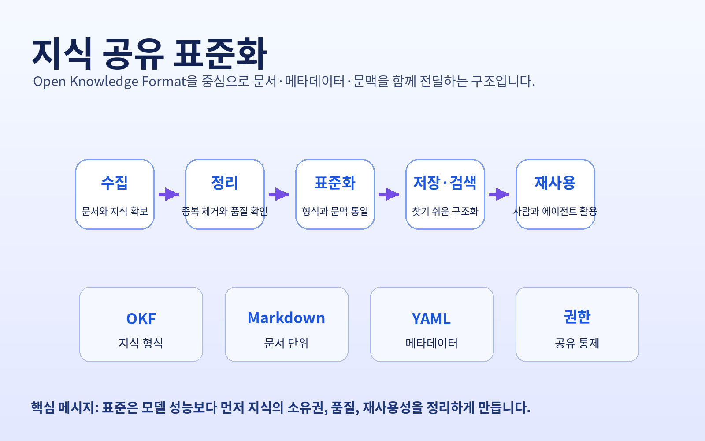
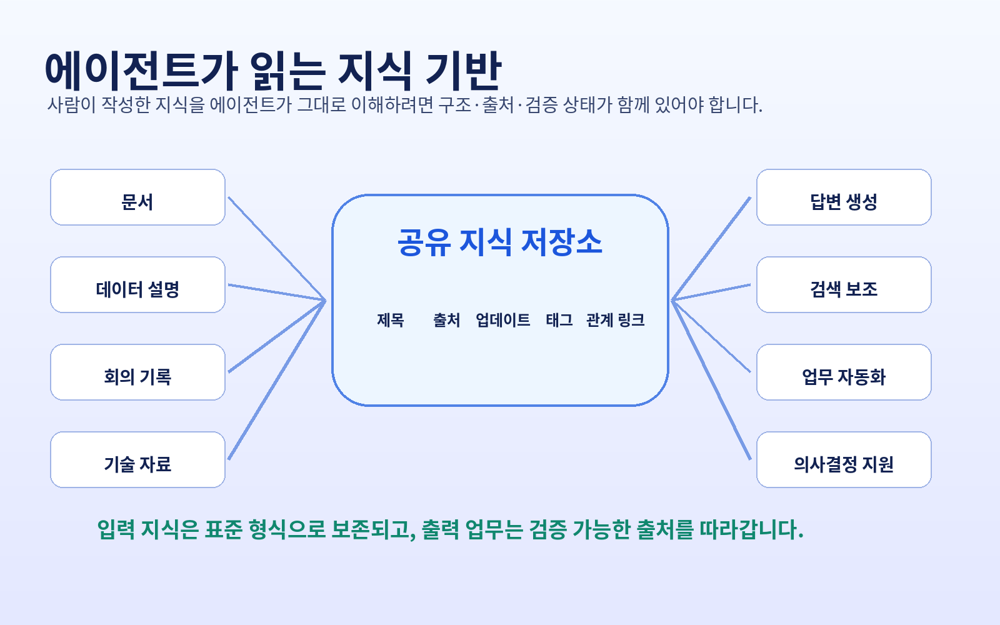
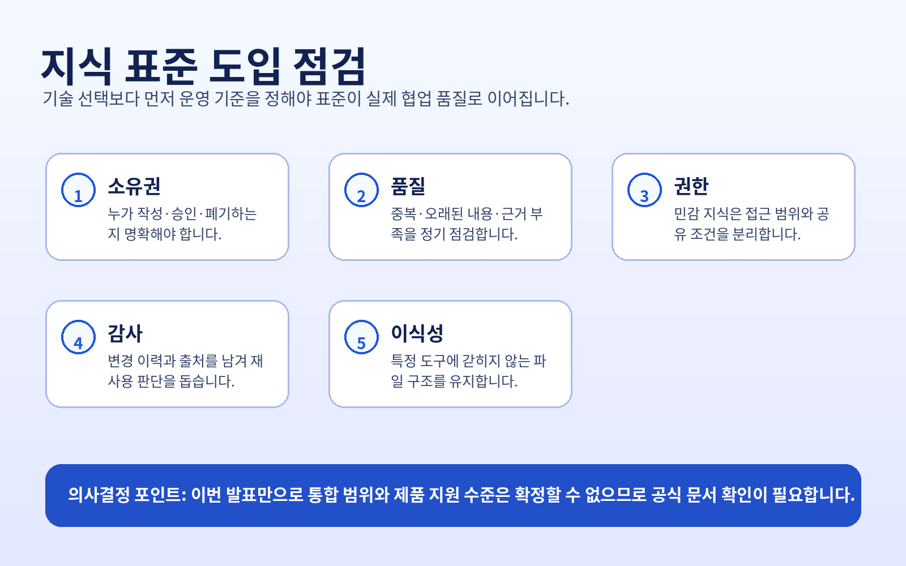

지식의 단위가 파일과 메타데이터로 재정의됩니다
원문은 오픈 지식 형식 0.1판이 마크다운 파일 디렉터리와 야믈 머리말을 기반으로 지식을 표현한다고 설명합니다. 이는 지식이 대화형 답변의 부산물이 아니라, 이동 가능하고 검증 가능한 자산으로 관리되어야 함을 시사합니다.
이번 실행에서 새로 확인한 글은 오픈 지식 형식 기반 지식 공유 개선 발표입니다. 원문은 지식 자산을 사람이 읽고 에이전트도 활용할 수 있는 이식 가능한 구조로 정리하려는 시도라고 설명합니다.
원문은 지식 공유를 더 안전하고 협업 친화적으로 만들기 위해 표준화된 문서화 형식이 필요하다고 설명합니다.
관찰된 변화는 단순한 문서 형식 제안이 아니라, 기업 내부 지식이 모델·도구·팀 사이에서 재사용되기 위해 필요한 구조화 기준을 공개 형식으로 다루기 시작했다는 점입니다.

원문은 오픈 지식 형식 0.1판이 마크다운 파일 디렉터리와 야믈 머리말을 기반으로 지식을 표현한다고 설명합니다. 이는 지식이 대화형 답변의 부산물이 아니라, 이동 가능하고 검증 가능한 자산으로 관리되어야 함을 시사합니다.
문서, 출처, 관계, 업데이트 상태가 함께 정리되면 사람이 검토한 지식을 에이전트가 더 안정적으로 활용할 수 있습니다. 다만 실제 제품 통합 범위는 원문만으로 확정할 수 없어 확인 필요입니다.
팀마다 다른 문서 관행을 하나의 교환 형식으로 맞추면 검색, 요약, 자동화 단계에서 번역·재가공 비용을 줄일 수 있습니다. 이 효과는 기존 저장소 품질과 운영 규칙에 크게 의존합니다.

| 검토 영역 | 관찰된 사실 | 의사결정 포인트 |
|---|---|---|
| 지식 구조 | 오픈 지식 형식은 마크다운과 야믈 머리말 기반의 지식 표현을 제안합니다. | 기존 문서 저장소를 그대로 연결할지, 선별·정제된 지식 저장소를 별도로 운영할지 결정해야 합니다. |
| 협업 방식 | 원문은 표준화된 문서화가 팀 간 협업 개선에 도움을 줄 수 있다고 설명합니다. | 작성자, 승인자, 갱신 주기, 폐기 기준을 먼저 정하지 않으면 표준 형식만 늘어날 수 있습니다. |
| 에이전트 활용 | 인공지능 시스템이 정확한 결과를 내려면 올바른 정보와 문맥이 필요하다는 전제가 제시됩니다. | 에이전트가 어떤 지식을 읽고 어떤 권한으로 행동하는지 추적 가능한 통제가 필요합니다. |
이번 수집 데이터만으로 특정 산업별 적용 성과나 비용 절감 효과는 판단할 수 없습니다. 다만 원문에서 확인되는 방향은 지식 자산을 특정 도구 안에 묶어두기보다, 사람이 검토하고 에이전트가 재사용할 수 있는 형식으로 정리하려는 흐름입니다.
정책, 고객 대응, 기술 표준처럼 반복 재사용 가치가 큰 영역부터 파일 구조와 메타데이터를 실험하는 편이 안전합니다.
에이전트가 답변을 생성할 때 어떤 지식 조각을 사용했는지 되짚을 수 있어야 신뢰와 감사 가능성이 생깁니다.
오픈 지식 형식이 지향하는 이식성을 실제로 얻으려면 특정 벤더의 저장소·색인·권한 모델에만 의존하지 않는지 확인해야 합니다.

원문 링크: 원문 링크 열기
수집 파일은 로컬 마크다운과 엘엘엠 위키 원문 컬렉션에 보존했습니다.